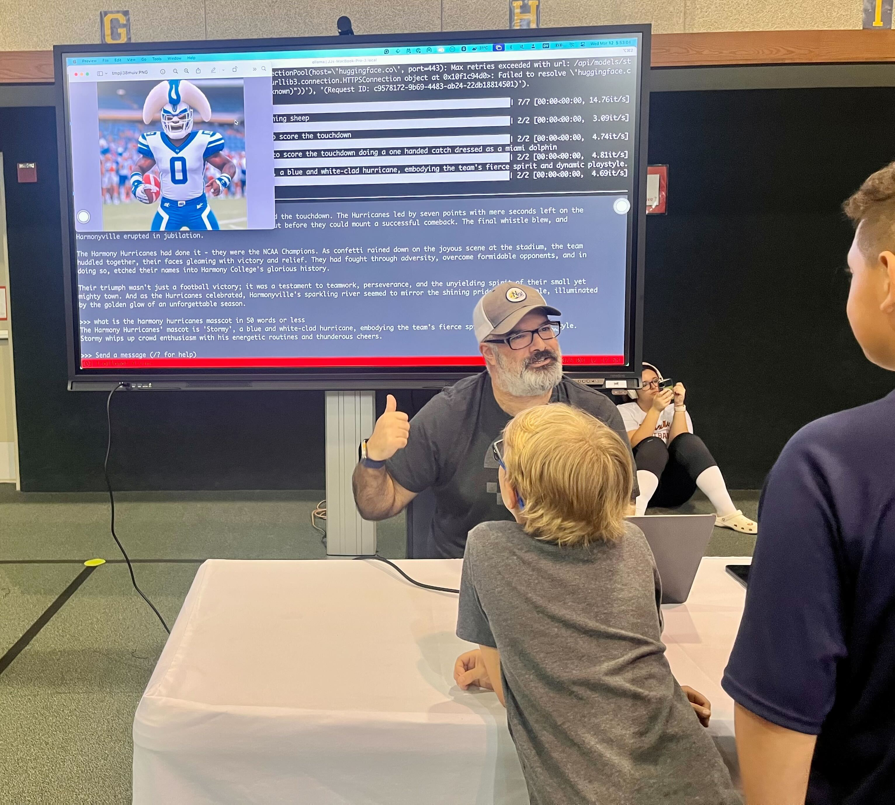

Open Source AI
by JJ Asghar | @jjasghar | awesome@ibm.com
But first Granite!
I need you to scan this qrcode to prove to my boss you're at my talk ❤️What is an open source model?
The largest problem is that AI models are binaries, and the "source code" isn't just the data, it's so much more.
tl;dr: Everyone is debating what "open source" means and we can't seem to come to an agreement, but the Model Openness Framework seems to be the most supported.

What is InstructLab and what does it solve?
What is fine tuning?
A qna.yaml example
A source markdown document example
RAG vs Fine Tuning
Imagine an AI model as an Librarian
RAG: Retrieval-Augmented Generation or the "library"
Fine Tuning goes into the "brain", so sending the librarian "back to school"
Agents and Agentic Workflows
Let's talk quickly about agentic frameworks...
What is an "agent?"
A few major frameworks people are graviting towards:
- Bee Framework
- crewai (a great crash course video)
- autogen
But what model should we tune?
This screenshot was taken March 10, 2025... 1.4 million seems a lot.
And this brings us back to Granite
Use Cases for Granite
ai-abstract-classifier: Run abstracts through a local LLM to give you some possible scores on what you are looking for.
Leverage the Granite Time Series model to project capacity planning
I think I've figured out how to push Nagios data into the model to project possible alerts...I'm hoping to have a link here when it's ready to show off...Leverage Granite 3.2 like this to create stories for some kids. This is a picture of me teaching AI at a STEM Night at an school.
Or even better come join me in the Granite Lounge to help me figure out the process of using Granite Time Series model to project my insulin pump supplies and insulin usage
I have the data, and I'm making progress, but it would be awesome to learn with you!
But JJ, how can I play with Granite?
Spend some time learning how to get Granite and what is required to run it locally, securely, and privately on your laptop.
Learn how to leverage the different Granite models to integrate with applications and developer focused work.
Here is a qrcode to this presentation
Thank you!
JJ Asghar | @jjasghar | awesome@ibm.com